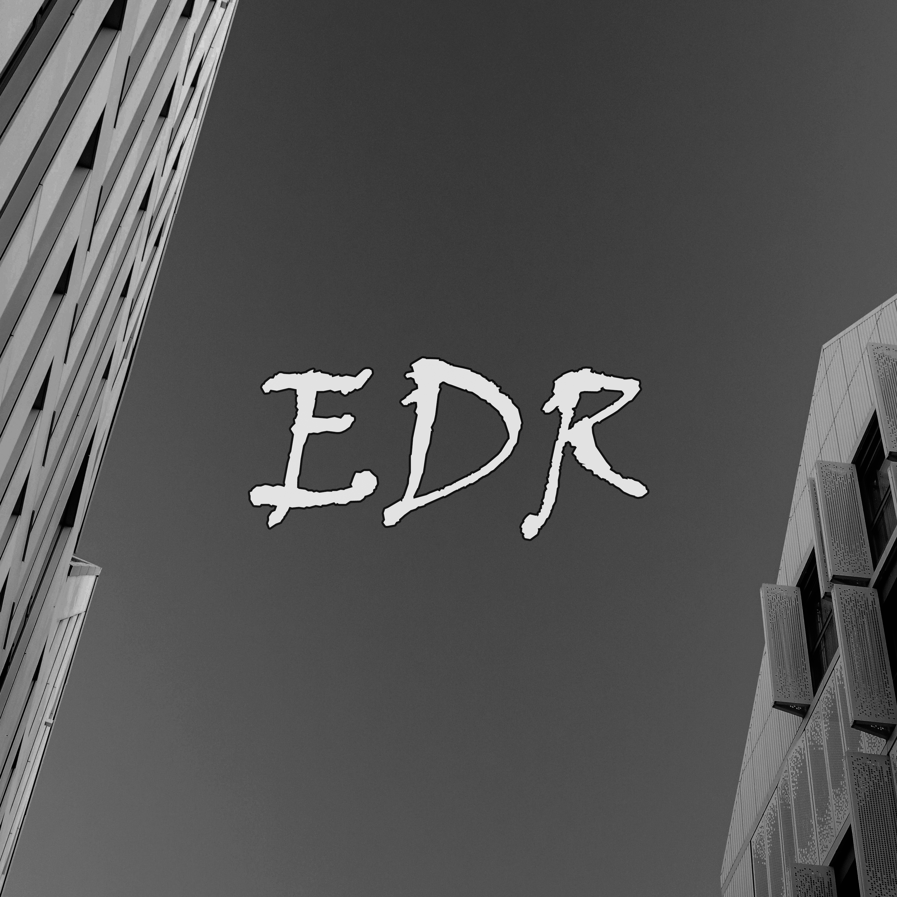

Brooding post-punk instrumental: throbbing bass, jagged guitars, driving drums, Reverb-drenched atmosphere builds to raw crescendo, Live grit captures dim venue energy
Шаблон: [Жанр] + [Тема] + [Настроение] + [Темп] + [Детали]
Stadium post-punk instrumental: atmospheric clean electric guitars with heavy reverb and delay, melodic bassline, slow-building powerful drums, no vocals, no synths, no distortion, Dark, expansive, and cinematic mood
Шаблон: [Жанр] + [Тема] + [Настроение] + [Темп] + [Детали]